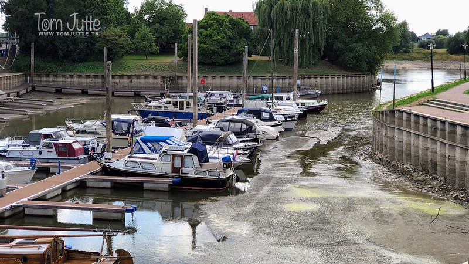
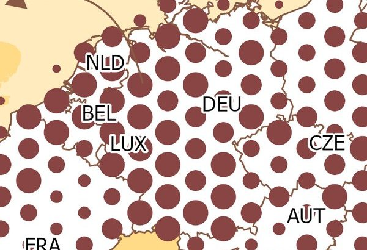
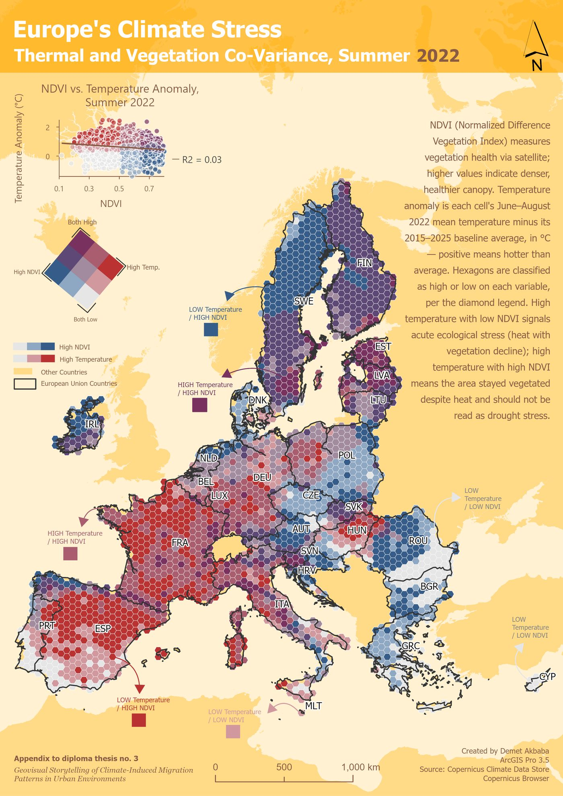
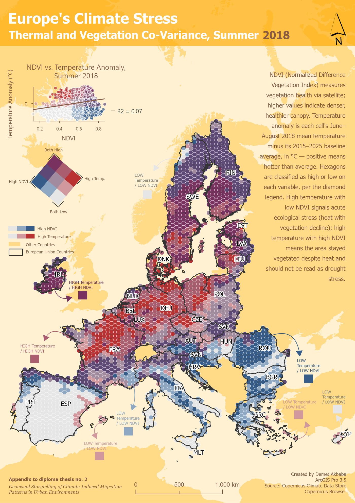
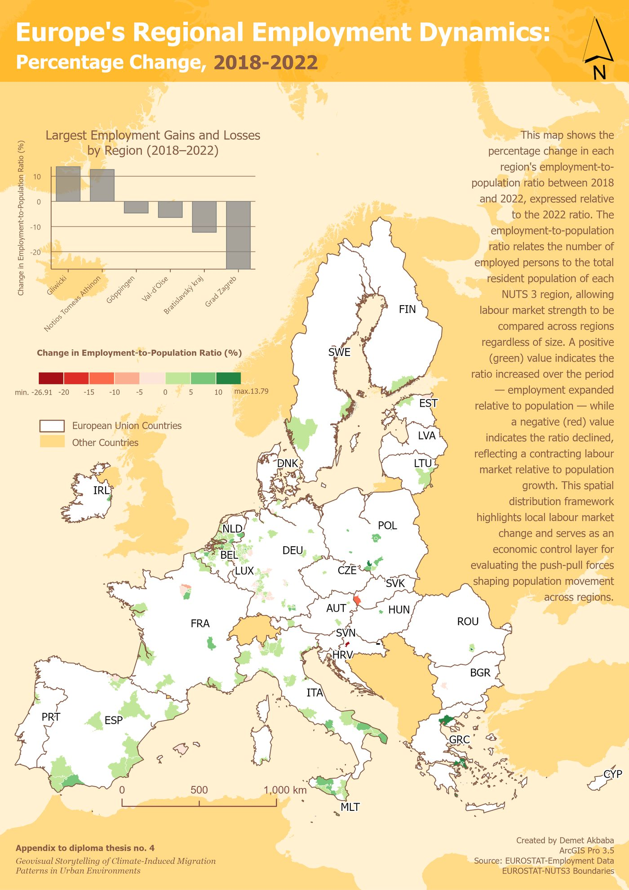
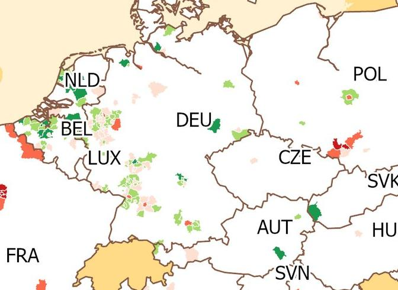
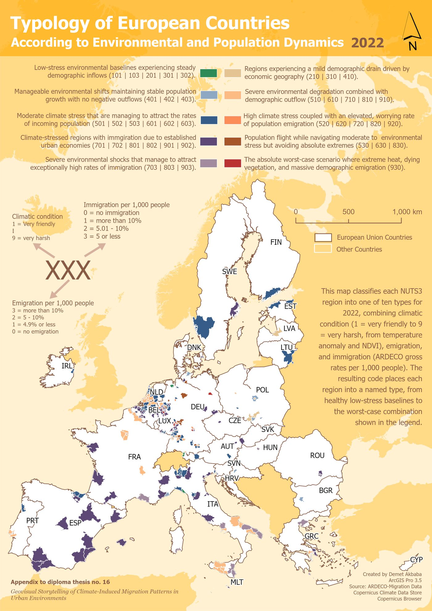
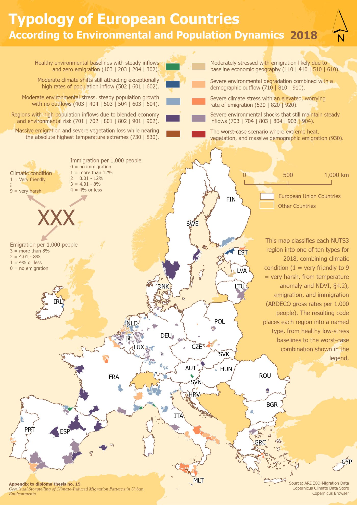
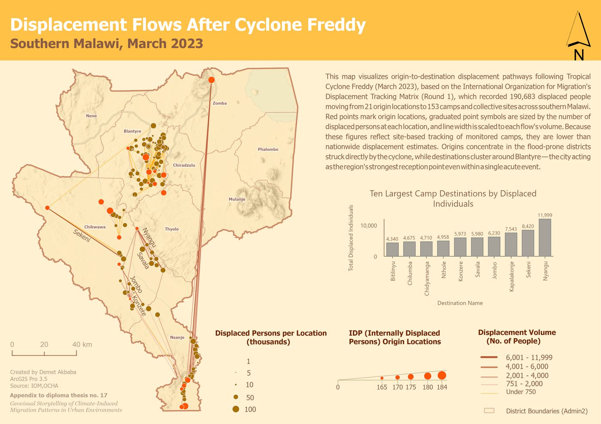
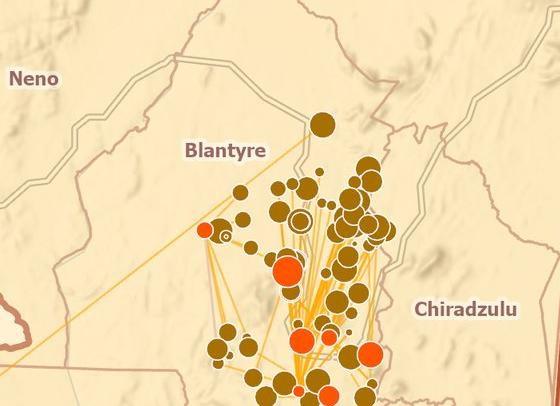

The Story
The Maps, Told as One Story
The Maps page lets you browse all 18 maps in any order. This page is different: it walks you through them in sequence, as one connected story, where each map leads into the next.
Setting the scene
This is a story about two very different climate crises. One unfolds slowly, over a decade, in the cities of Europe, where droughts build pressure year after year. The other happens in just days, in southern Malawi, when Tropical Cyclone Freddy struck in March 2023. Told together, they reveal something important: a city's link to climate-driven migration depends on whether the disaster happens somewhere else and pushes people toward the city, or happens to the city itself.

The story starts, deliberately, with a question that has nothing to do with climate at all: where do people already live?
1 · Where people already are
The Human Canvas map shows where people live across Europe, with bigger dots meaning more people. It reveals the famous "Blue Banana", a dense band of population running from the Rhine-Ruhr area down to northern Italy. Rhine-Ruhr is the densest spot on the whole map: 49 million people packed into a small area.
Where people already live matters for everything that follows, because in a crowded region, even a small change in migration means a very large number of people moving. The next map asks whether these same crowded areas are also where climate stress hits hardest.

2 · Two droughts, two different shapes
The Climate Stress Grid shows where Europe's summers were hottest and driest, combining unusual heat with stressed vegetation, for the two big drought years of 2018 and 2022. The two years look very different. Drag the handle across the map below to slide one year over the other.


drag the handle ↔ to slide 2018 over 2022
In 2018, the worst stress showed up in an unexpected place: central and northern Europe (Germany, France, Scandinavia, Poland), rather than the usual dry south. By 2022, in one of the most severe droughts Europe has seen in centuries, it had shifted sharply south and west, hitting Spain, Portugal and France hardest.
Two years, two completely different maps of stress. So the next question is: does the local economy pull people toward these stressed areas, or away from them?
3 · Does the economy agree with the climate?
The Economic Magnet map shows where jobs grew or shrank between 2018 and 2022. The strongest job growth was in southern Poland's industrial belt; the sharpest decline, by far, was in Zagreb. Crucially, none of this lines up with where climate stress was worst on the previous map.
That mismatch is the point: climate stress and economic opportunity do not move together. Neither one alone tells us whether people actually moved. To answer that, the story turns to ten years of real migration data, year by year.

4 · The central finding, watched not just read
This is the most important part of the story. The Demographic Heartbeat maps show, for every year from 2015 to 2024, whether more people were moving into each area (green) or out of it (red). Swipe through the ten years below.
← swipe through the years 2015 to 2024 →
Swiping through the years, people did not start leaving in the same year as either drought. A rise in people moving out appears only in 2019 to 2021, in the same crowded western German cities (Heidelberg, Karlsruhe, Stuttgart, Frankfurt, Cologne) that were both the densest and among the most drought-stressed back in 2018. It is tempting to call that cause and effect, but it is not that simple: those exact years overlap with the COVID-19 pandemic, which disrupted migration everywhere for its own reasons. And after the even bigger drought of 2022, no similar rise appears at all. If drought simply pushed people out a few years later, the bigger drought should have pushed harder. It didn't.

This uneven pattern is the story's key insight: climate stress and migration are connected, but not in a simple, automatic way. Moving takes both the wish to leave and the means to do it, and neither is the same from one year or one place to the next.
5 · Pulling every thread together
This final pair of maps pulls everything together, combining climate stress with how many people were arriving and leaving, and sorts every region into a type, once for 2018 and once for 2022. Drag the handle across the map below to slide one year over the other.


drag the handle ↔ to slide 2018 over 2022
In both years, the most common type across the map is regions that face severe climate stress yet still keep attracting people and losing almost none, spread across Spain and, by 2022, reaching further into France.
In other words, places can keep drawing people in even as their climate gets worse. Where people move is not decided by climate comfort alone. That is where the Europe story ends.
The story changes pace
Everything so far unfolded slowly, over a decade, across a whole continent. What comes next happens in a matter of days, in one region. That change of pace is the point: a slow crisis and a sudden one are genuinely different, and the maps that follow deliberately look different too.
6 · Where people fled
The Displacement Flow map traces where people fled after Tropical Cyclone Freddy hit in March 2023. Based on humanitarian tracking data, it follows 190,683 people from 21 places they left to 153 places they arrived. Most left the flood-hit districts the cyclone struck directly, above all Chikwawa. But they did not scatter evenly: they gathered around one city, Blantyre.
Even in a disaster lasting days rather than years, the city was still the place people ran to. That raises one last question: was Blantyre only a safe destination, or was it also caught in the disaster itself?


7 · The destination is also the epicentre
This last map answers that, combining where the population is growing with where landslides struck, mapped from satellite images taken before and after the cyclone. Of the 24 areas that scored high on both, 23 are neighbourhoods inside Blantyre itself, the same informal hillside settlements where most of the March 2023 landslide deaths happened.
That is the twist the Malawi story ends on: the city was not a safe refuge from the disaster. It was hit directly, and it keeps drawing people in anyway, into the very neighbourhoods most at risk from the next landslide.
What the two stories add up to
Put side by side, the two stories show that a city's link to climate-driven migration is not one thing but at least two. In Europe, over a slow decade, cities are mainly destinations: safe places that keep drawing people in, even as the climate around them worsens. In Malawi, in a single week, the city is disaster zone and destination at once: hit directly, yet still the place people fled to.
These maps show patterns; they do not claim that climate stress directly causes people to move. What the story adds, that a table of numbers could not, is the chance to actually see these patterns for yourself, above all by swiping through the ten years of migration maps.
For the full results and the background behind these maps, see the Results section of the main site.
Further reading: the primary sources behind this story
-
Copernicus Climate Data Store
The climate and temperature data behind the Europe drought maps.
-
IOM Displacement Tracking Matrix
The humanitarian data behind the Malawi displacement map.
-
Eurostat regional data
The European regional boundaries used across the maps.
-
IOM Climate Mobility Impacts Dashboard
A related global tool showing climate and migration together.
{kind=link}
{kind=link}
{kind=link}
{kind=link}